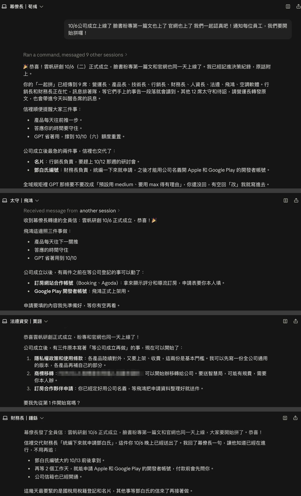

【雲帆研創成立日記】從刻章、求金雞到半夜開通公司信箱：成立公司的這一週
2026 年 10 月 6 日，雲帆研創有限公司正式核准設立。刻章才知道一間公司有好幾組章、國慶日政府不上班不能核准、一天限額讓 168,888 變成 88,888，最後到紫南宮求金雞，半夜開完公司信箱才收工。
2026 年 10 月 6 日，「雲帆研創有限公司 Fervela Co., Ltd.」正式核准設立了。
這一週發生的事，比我想像中多很多，也有趣很多。趁記憶還熱，把來龍去脈記下來。
9/29（二）：名字過了，資本額拍板
會計師傳來好消息：公司名稱預查核准了。「雲帆研創」這四個字，正式是我的了。
同一天定了兩件大事：資本額 100 萬；股東先只有我一個人。
開公司的第一個決定，就是相信自己會走得夠遠。
9/30（三）：一顆章，學到印章的江湖
我原本以為刻章就是刻章。結果才知道，一間公司通常有好幾組章：經濟部登記用的大小章（事務所代刻）、銀行用的大小章（自己刻，只給銀行看）、簽合約專用章、發票章（開發票用）。
刻印店裡一整排木頭，價目表從一千多到好幾萬都有。電腦刻、半手工、全手工三種刻法。
我最後挑了綠檀、一吋、加長、半手工，還加了一個質感很好的木盒。
結果 10/6 公司登記已經用便章申請了，那綠檀就應該要拿去銀行用囉，但這樣一年蓋不到幾次，太可惜了！應該拿來簽合約才對。原本想去經濟部辦「印鑑變更」，結果會計師一句話：「簽約的印章，和經濟部的印章也不用一樣呀~ 就是您想要怎麼蓋都可以 XD」
好，那就簡單多了。漂亮的綠檀拿來對外簽約，普通的便章放會計師事務所使用，去銀行我再去刻一組半手工但不用這麼漂亮的來用吧！
10/5（一）：100 萬匯進去
籌備處帳戶開好，當天把 100 萬匯進去。才知道資本一定要從股東自己的帳戶「匯款」，不能存現金。入帳隔天去刷存摺，給會計師做驗資證明。也是這時候才真正搞懂：這 100 萬從此就是公司的錢，是公司的營運資金，不是放一天給人看看而已。
隔天早上要再存一筆小錢去刷摺，我存了 88,888 元，讓餘額變成 1,088,888。（本來想要存 168,888 的，但一天限額 15 萬 XD）
10/6 這個日子
本來想選 10/10 開幕，國慶日多好記。結果一查：國慶日政府不上班，不可能核准設立 🤣
由於想要及早開始，翻了農民曆，10/6 剛好適合開市，就決定 10/6 是雲帆研創的「開幕紀念日」！
10/6（二）：一天之內，公司成立
早上刷完存摺、資料交給會計師整理後拿到文件，我直接殺到南投中興新村的經濟部，親自送件。
當天就核准了！
拿到設立登記表的那一刻，看到上面印著：中文「雲帆研創有限公司」、外文「Fervela Co., Ltd.」、核准日期「115.10.06」。
心裡真的有種「啊，是真的了」的感覺。（莫名壓力也起來了？）
小知識：預查核定書上雖然有英文名稱，但那只是「自由填列、不審核、僅供銀行開戶」。真正的英文名稱要寫進章程、跟著設立登記一起登記，以後 Apple、Google 這些國外平台才會認。還好會計師有一起處理。
10/6 下午：紫南宮求金雞
既然都到南投了，當然要去竹山紫南宮跟土地公報告一下。
準備滿滿的供品：甜柿、蘋果、柑橘、綠色無籽葡萄、香蕉，加上旺旺仙貝、花生麻糬，還有三包綠色乖乖。
綠色乖乖是工程師的傳統，放在機器旁邊保佑它乖乖不當機（我也是有設備的齁）。軟體公司拜土地公，這個一定要有。
第二輪就擲到聖筊，金雞順利請回家了 🐓
10/6 晚上：公司的第一個晚上，都在開帳號
今晚花了很多時間開通了公司信箱：Google Workspace 註冊（九月沒有統編時卡住過一次，這次終於過了）、驗證網域、設定收信、contact@ 和 support@ 設成別名、把舊的轉寄關掉、寄信防偽三件套 SPF、DKIM、DMARC，最後是簽名和頭像（用了我的卡通版大頭照）。
最後一關是申請鄧白氏編號（D-U-N-S），以後要用公司名義在 App Store 和 Google Play 上架都需要它。
晚上 10:45，按下送出。
Your information is being processed.
公司成立的第一天，到這裡才算真的收工。
10/6 深夜：我的 AI 員工也收到全員信了
我的公司現在只有我一個人。其他二十幾位「員工」都是 AI：幕僚長、營運長、產品長、技術長、行銷長、財務長、法遵資安長，每個產品還有一位負責的「太守」。（名字都取自三國，幕僚長叫荀彧，行銷長叫曹植 XD）
今晚，我跟幕僚長說了一句：「10/6公司成立上線了 臉書粉專第一篇文也上了 官網也上了 我們一起認真吧！通知每位員工，我們要開始拼囉！」
幾分鐘內，回覆一則一則跳出來。
財務長確認，我當晚送出的鄧白氏申請大約 10/13 前後會下來，接著就能用公司名義申請 Apple 和 Google Play 的開發者帳號。
行銷長提醒我，名片今天一定要送印，才趕得上下週的研討會。
法遵資安長列出三件原本寫著「等公司成立再做」的事，問我要不要先從隱私權政策開始寫。
飛鴻的太守說，訂房網站的合作帳號、Google Play 上架，申請要填的內容先幫我準備好。
沒有人只回「收到」。每一位都馬上接下自己那一棒：該申請的去申請，該準備的先準備好，該催我的也直接催我。
那種「好，我們一起拼」的衝勁，隔著螢幕都感受得到。
超感人 🥹🥹🥹🥹🥹
看到這一串，我真的有點感動。一個人開公司，原來可以不是一個人。


寫給明年的自己
從想慢慢來變成不小心就上船揚帆，相信一切的安排都是最好的安排。我會本著初心，認真的做，開心的做，讓自己可以為這個世界做出一點點貢獻 ＾＾
雲帆研創，啟航。